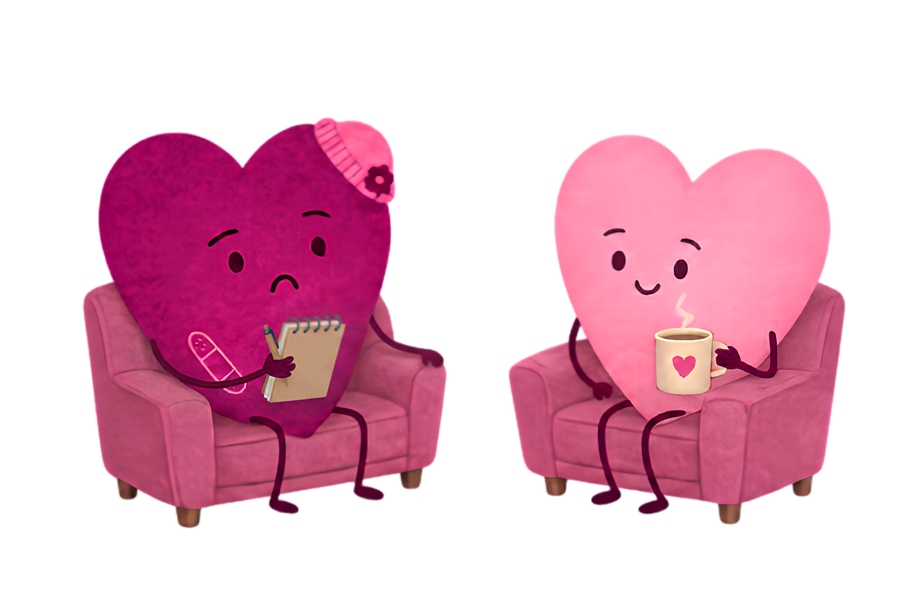

Narrativas 1/10Psicóloga cristiana@loreflorezb
Deja de pensar que
la maternidad
te robó la
libertad
ILUSTRACIÓN A SANGRE · mamá de ojos cerrados con su bebé en brazos, sentada en casa
Narrativas 1/10Psicóloga cristiana@loreflorezb
Narrativas 2/10Psicóloga cristiana@loreflorezb
Hace poco
Algo simple
Intenté ir a arreglarme las cejas.
Con un bebé de tres meses y lactancia exclusiva, no pude.
«Ya no tengo libertad.»
PERSONAJE · mujer de ojos cerrados caminando de regreso a casa
Narrativas 2/10Psicóloga cristiana@loreflorezb
Narrativas 3/10Psicóloga cristiana@loreflorezb
Más real
se volvía
De regreso a casa me repetía: no puedo hacer nada sola.
Cuanto más lo decía, más real se volvía.
Narrativas 3/10Psicóloga cristiana@loreflorezb
Narrativas 4/10Psicóloga cristiana@loreflorezb
Renovar
la mente
«Transfórmense mediante la renovación de su mente.» Romanos 12:2 NBLA
Dios transforma nuestras circunstancias y la historia desde la que las interpretamos.
Narrativas 4/10Psicóloga cristiana@loreflorezb
Narrativas 5/10Psicóloga cristiana@loreflorezb
Frases que
repetimos
- «Nunca cambiaré.»
- «Nadie me entiende.»
- «Ya no tengo libertad.»
- «Siempre me pasa lo mismo.»
Narrativas 5/10Psicóloga cristiana@loreflorezb
Narrativas 6/10Psicóloga cristiana@loreflorezb
Repetir
la hace verdad
Como psicóloga veo que nuestra mente vive de interpretaciones.
Eso se llama una narrativa
Narrativas 6/10Psicóloga cristiana@loreflorezb
Narrativas 7/10Psicóloga cristiana@loreflorezb
Dios confrontó
mi corazón
Esta etapa tiene límites. Eso es diferente a perder libertad.
Una describe la circunstancia. La otra define tu vida.
Narrativas 7/10Psicóloga cristiana@loreflorezb
Narrativas 8/10Psicóloga cristiana@loreflorezb
Qué hacer hoy
1.Escribe la frase que más te repites.
2.¿Describe tu circunstancia o define tu vida?
3.Llévala a la Palabra antes de creerla.
Narrativas 8/10Psicóloga cristiana@loreflorezb
Narrativas 9/10Psicóloga cristiana@loreflorezb
Cuándo pedir
ayuda
- Llevas meses repitiendo la misma historia.
- Afecta tu sueño, tus relaciones o tu fe.
- Ya lo intentaste y vuelves al mismo punto.

Narrativas 9/10Psicóloga cristiana@loreflorezb
Narrativas 10/10Psicóloga cristiana@loreflorezb
Cuéntame
¿Qué frase te has repetido hasta que pareció una verdad?
No tienes que cargarla en soledad. Te acompañamos: agenda en el enlace del perfil.
Narrativas 10/10Psicóloga cristiana@loreflorezb